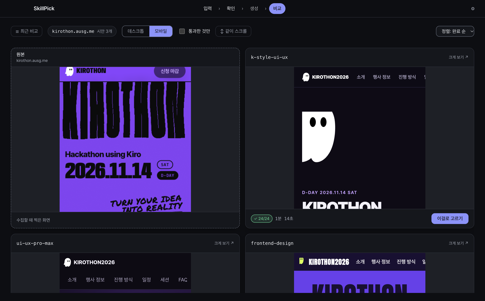
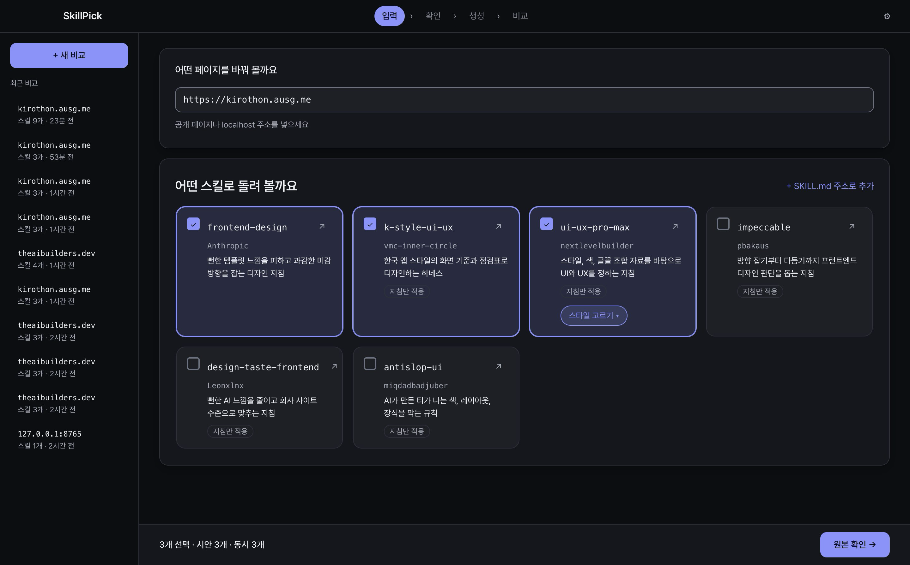
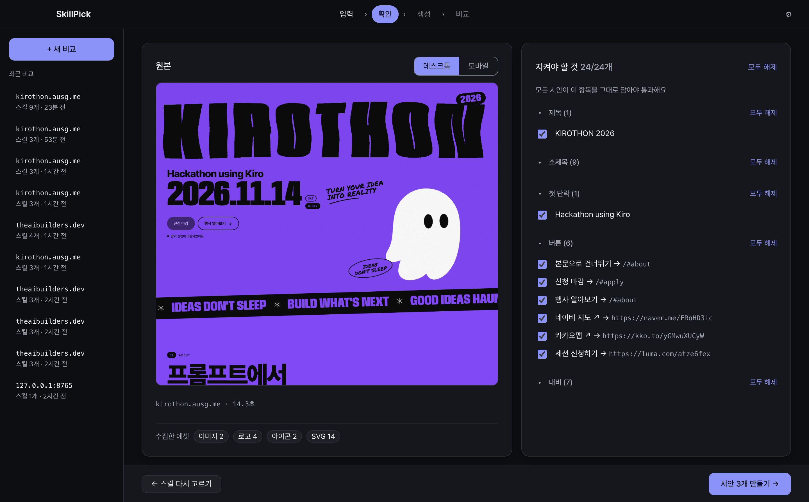
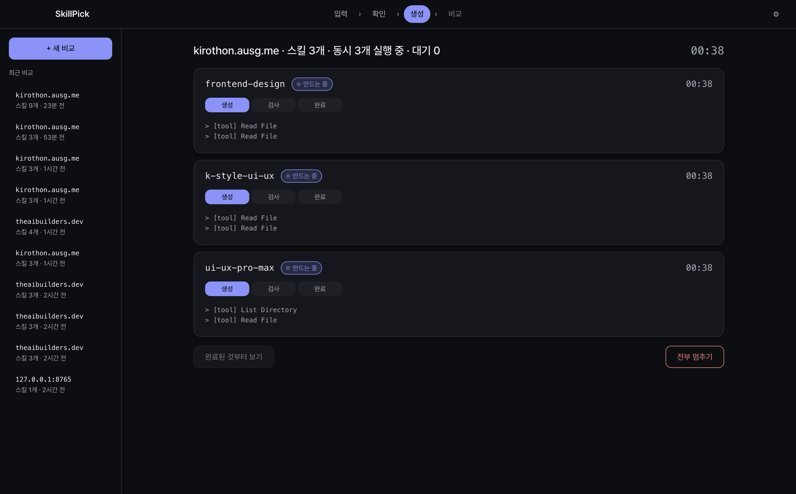
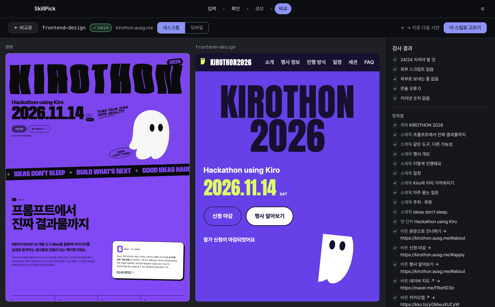
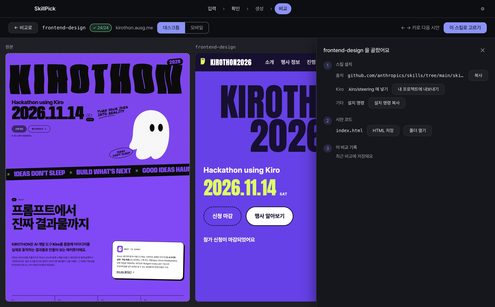

시연 4 · 비교
원본이 첫 칸, 시안마다 통과 개수


SkillPick
자기 서비스를 직접 만드는 개발자와 1인 창업자를 위해
팀 태지로 · 박태영
문제
디자인 스킬이 너무 많아 어떤 것을 써야 할지 모름
스킬 하나로 시키고, 별로면 다른 스킬로 다시 시킴. 하나씩 돌려 비교하면 기다리는 시간이 더해짐
시안이 원본의 문구, 가격, 버튼, 링크를 빠뜨려도 하나하나 눈으로 대조해야 알 수 있음
지금 근거는 만든 사람 본인의 경험이고, 얼마나 흔한 불편인지 조사한 설문은 아직 없음
2해결
지켜야 할 것 선정과 통과 판정은 src/core/ 순수 함수와 시험 172개로 고정
시안마다 작업 폴더에 designer 에이전트와 steering, 수용 기준 문서를 만들어 실행
시연 1 · 입력

주소를 넣고 Enter를 누르면 원본 수집이 바로 시작됨
기본 스킬 6개 중에서 고르고, 선택 요약은 하단 고정 바에 보임
시연 2 · 확인

원본에서 뽑은 문구, 가격, 버튼, 링크를 종류별로 접고 펼침
종류별·전체 선택과 해제가 있고, 링크는 글자와 경로를 같이 보임
시연 3 · 생성 중

스킬마다 Kiro CLI 프로세스가 하나씩 떠서 동시에 시안을 만듦
실제 프로세스 상태와 시작·종료 시각만 보임. 가짜 진행률 없음
시연 4 · 비교

시연 5 · 크게 보기와 고르기


실측 · 2026-11-14 · kirothon.ausg.me
세 Kiro CLI 프로세스가 시작한 시각 차이
세 시안 모두 지켜야 할 것 24개 전부 통과
세 시안의 외부 스크립트와 지어낸 숫자
막대는 Kiro CLI 실행 시간. 235.1초는 세 시간의 합으로, 직접 순차 실행해 잰 값은 아님. 출처는 앱이 남긴 timeline.log, 한 사이트 한 번 측정
9차별점
통과 여부는 src/core/checker.js가 정함. 가격 표기 차이(9,900원과 9900원)는 통과, 외부 <script src>는 실패로 시험에 고정
매번 실제로 Kiro CLI를 돌리고, 하나씩 도는데 동시인 척하는 표시를 반목표로 둠
별도 세션의 webview, Node 접근 없음, 응답 헤더 CSP 강제, 이동과 새 창 차단. 원본 글자는 데이터로만 다룸
Kiro 활용
요구사항 8개, 수용 기준 36개, 구현 작업 17개 모두 완료. Kiro CLI가 tasks.md를 위에서부터 따라 구현
product, tech, security 규칙. src/core 저장 시 npm test를 도는 훅
시안마다 designer 커스텀 에이전트를 비대화 모드로 실행. 스킬은 steering, 지켜야 할 것은 수용 기준 문서로 전달
시험 통과, 실패 0
커밋 (11:14~16:35)
소스 줄 수, 파일 44개
의존성 electron, linkedom
기획과 문서 작성은 Claude Code, 앱 구현은 Kiro CLI. 숫자 출처는 BUILD_REPORT.md
11한계와 다음
--trust-tools를 주면 작업 폴더 밖 파일도 읽고 쓸 수 있음(3.1.0, 3.3.0 확인). 셸 실행은 막혀 있음
사용자 전역 steering과 스킬이 시안 생성에 같이 들어오고, 끌 방법을 찾지 못함
스타일 목록을 읽을 수 있는 것은 ui-ux-pro-max뿐. 예비 엔진은 만들지 않음
다음: 폴더 범위를 강제로 막는 방법 찾기, 실제 Kiro CLI로 다시 고치기 관찰, 여러 사이트에서 다시 측정
12